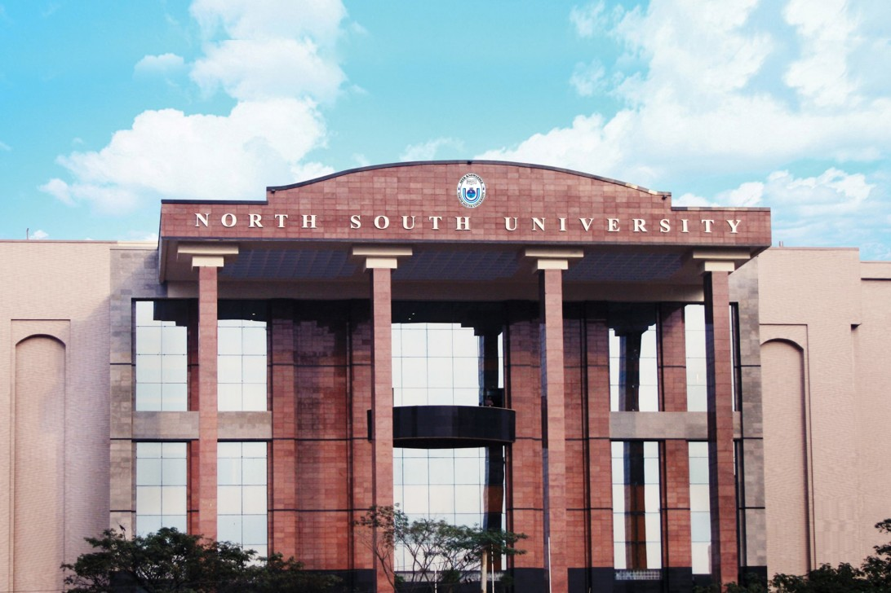
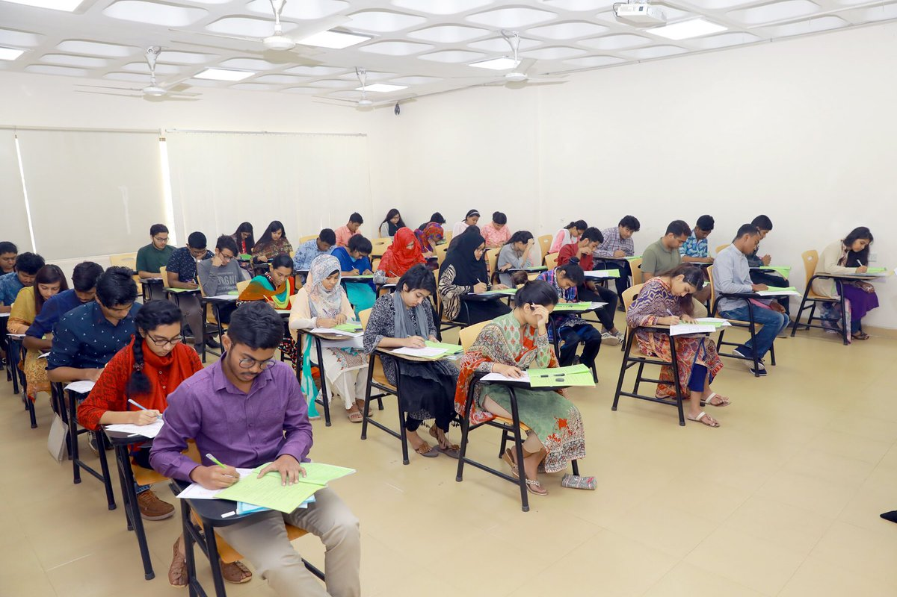
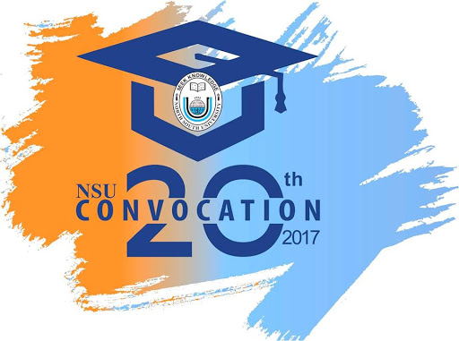

North South University's Business & Management Studies and Computer Science & Information Systems has been ranked in the QS World University Rankings 2021 by Subject for the second year in a row. NSU also continues to be the only private university in Bangladesh to be ranked in the QS Rankings by Subjects.
Business and Management Studies secured the Global Rank of 351-400, ascending 50 spots from last year. Computer Science and Information Systems secured the Global Rank of 601-650
Exams are the best way to check a student’s knowledge and learning about a specific subject. If you are looking to get help in your exam, you can hire an exam help online expert. Exams are very important because they push students to learn. Exams are essential for a student in the process of learning to become proficient. To take an exam or a test of an individual is the best way to assess what a student has learned about a specific subject.
We are the most reliable service to hire an expert who can help in your exam for any subject. Students are always worried about their exams because, in the end, your grades will define your knowledge, credibility, and learning.
On Thursday, February 18, North South University held its 19th Convocation for our new graduates. It was a grand ceremony to bid farewell to our former students, now new graduates, with both a heavy and a happy heart. Over 2000 former students attended the convocation along with their proud families and friends. The Chairman of the ceremony was the Chancellor of the University and the President of the People's Republic of Bangladesh.
Professor Abdul Mannan in his speech expressed the happiness that he felt and thanked the NSU authorities for inviting him. He encouraged students to keep an eye on their culture and heritage.